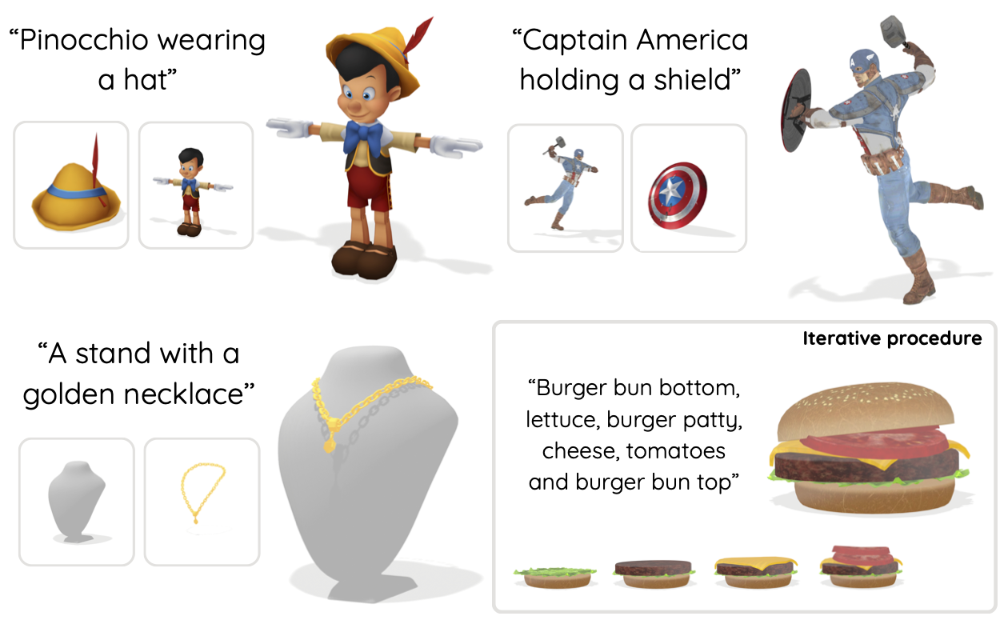
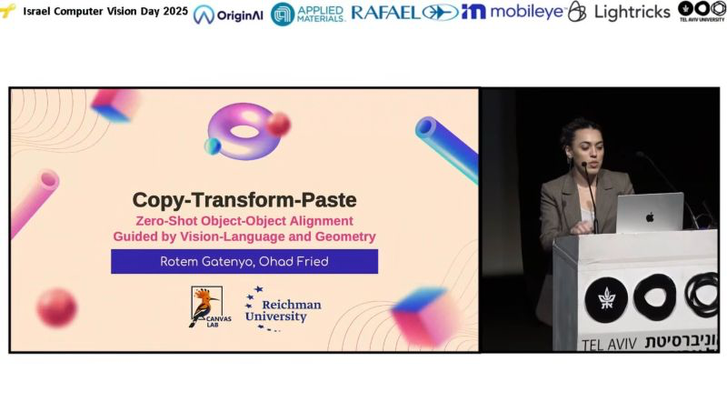

Accepted to CVPR 2026
Copy-Transform-Paste
Our CVPR 2026 paper on zero-shot alignment of two 3D meshes using vision-language guidance and geometric constraints.
Explore publicationComputer Vision Researcher
Exploring generative AI, 3D geometry, and creative technologies.
News
About
I am Rotem Gatenyo, a Ph.D. researcher at Tel Aviv University with Itai Lang at the Geometric Intelligence Lab. I completed my M.Sc. in Computer Science at Reichman University, where I conducted my thesis research at the Canvas Lab. My work explores visual computing, 3D geometry, and generative models, with a particular interest in spatial understanding, computational creativity, and tools that connect machine learning with visual expression.
01

Accepted to CVPR 2026
Our CVPR 2026 paper on zero-shot alignment of two 3D meshes using vision-language guidance and geometric constraints.
Explore publication
Self-taught CAD design and fabrication planning for a collaborative interactive installation built for Midburn.
Explore project02
Reichman University ·
I gave a talk at the MLDS program kickoff event at Reichman University.

Israel Computer Vision Day · 2025
I presented our work on zero-shot object-object alignment, shared the ideas behind the method, and discussed it with the Israeli computer vision community.